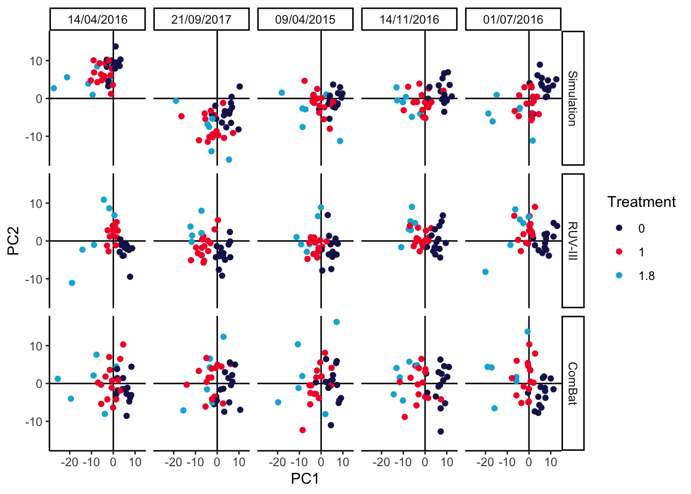

We’ve defined a batch_correct wrapper function that implements either the
RUV-III or ComBat batch effect correction methods. Their outputs are contrasted
in the PCAs below. It looks like ComBat might be somewhat too aggressive,
causing the 1 and 1.8 treatment groups to substantially overlap, while RUV
is a bit more conservative, keeping the treatment groups nicely separate. As an
aside, we note that this conclusion can depend on the number of replicates and
total number of samples available. We’ve included the code for generating the
imaginary_design data.frame in a vignette
for the MIGsim package. Can you find settings that lead either method astray?
p[["ruv"]] <- pca_batch(batch_correct(anaerobic_sim, "ruv"))
p[["combat"]] <- pca_batch(batch_correct(anaerobic_sim, "combat"))
prediction_errors <- function(df) {
y_hat <- predict(lda(treatment ~ PC1 + PC2, data = df), type = "response")$class
table(df$treatment, y_hat)
}
map(p, ~ prediction_errors(.$data))## $sim
## y_hat
## 0 1 1.8
## 0 62 13 0
## 1 15 56 4
## 1.8 1 14 15
##
## $ruv
## y_hat
## 0 1 1.8
## 0 70 5 0
## 1 2 67 6
## 1.8 0 8 22
##
## $combat
## y_hat
## 0 1 1.8
## 0 65 10 0
## 1 12 59 4
## 1.8 1 12 17## R version 4.4.0 (2024-04-24)
## Platform: aarch64-apple-darwin20
## Running under: macOS Ventura 13.4
##
## Matrix products: default
## BLAS: /Library/Frameworks/R.framework/Versions/4.4-arm64/Resources/lib/libRblas.0.dylib
## LAPACK: /Library/Frameworks/R.framework/Versions/4.4-arm64/Resources/lib/libRlapack.dylib; LAPACK version 3.12.0
##
## locale:
## [1] en_US.UTF-8/en_US.UTF-8/en_US.UTF-8/C/en_US.UTF-8/en_US.UTF-8
##
## time zone: America/Chicago
## tzcode source: internal
##
## attached base packages:
## [1] splines parallel stats4 stats graphics grDevices utils datasets methods base
##
## other attached packages:
## [1] TreeSummarizedExperiment_2.12.0 Biostrings_2.72.1 XVector_0.44.0 SingleCellExperiment_1.26.0 scDesigner_0.0.0.9000 purrr_1.0.2
## [7] MIGsim_0.0.0.9000 tidyr_1.3.1 tibble_3.2.1 scico_1.5.0 pwr_1.3-0 patchwork_1.2.0
## [13] mixOmics_6.28.0 lattice_0.22-6 MASS_7.3-60.2 glue_1.7.0 ggplot2_3.5.1 ggdist_3.3.2
## [19] gamboostLSS_2.0-7 mboost_2.9-10 stabs_0.6-4 forcats_1.0.0 dplyr_1.1.4 SummarizedExperiment_1.34.0
## [25] Biobase_2.64.0 GenomicRanges_1.56.0 GenomeInfoDb_1.40.0 IRanges_2.38.0 S4Vectors_0.42.0 BiocGenerics_0.50.0
## [31] MatrixGenerics_1.16.0 matrixStats_1.3.0 SpiecEasi_1.1.3 CovTools_0.5.4
##
## loaded via a namespace (and not attached):
## [1] minpack.lm_1.2-4 XML_3.99-0.16.1 rpart_4.1.23 lifecycle_1.0.4 Rdpack_2.6 edgeR_4.2.0 doParallel_1.0.17 insight_0.20.1
## [9] magrittr_2.0.3 limma_3.60.2 sass_0.4.9 rmarkdown_2.27 jquerylib_0.1.4 yaml_2.3.8 DBI_1.2.3 RColorBrewer_1.1-3
## [17] ADGofTest_0.3 abind_1.4-5 zlibbioc_1.50.0 expm_0.999-9 quadprog_1.5-8 pspline_1.0-20 kde1d_1.0.7 rgl_1.3.1
## [25] yulab.utils_0.1.4 pracma_2.4.4 sva_3.50.0 GenomeInfoDbData_1.2.12 ggrepel_0.9.5 tidytree_0.4.6 genefilter_1.86.0 ellipse_0.5.0
## [33] RSpectra_0.16-1 annotate_1.82.0 svglite_2.1.3 codetools_0.2-20 DelayedArray_0.30.1 shapes_1.2.7 tidyselect_1.2.1 shape_1.4.6.1
## [41] UCSC.utils_1.0.0 farver_2.1.2 randtoolbox_2.0.4 base64enc_0.1-3 jsonlite_1.8.8 Formula_1.2-5 survival_3.7-0 iterators_1.0.14
## [49] systemfonts_1.1.0 foreach_1.5.2 tools_4.4.0 progress_1.2.3 treeio_1.28.0 ragg_1.3.2 Rcpp_1.0.12 rARPACK_0.11-0
## [57] gridExtra_2.3 SparseArray_1.4.8 mgcv_1.9-1 xfun_0.44 distributional_0.4.0 withr_3.0.0 numDeriv_2016.8-1.1 fastmap_1.2.0
## [65] fansi_1.0.6 digest_0.6.35 R6_2.5.1 textshaping_0.4.0 colorspace_2.1-0 RSQLite_2.3.7 inum_1.0-5 copula_1.1-3
## [73] flare_1.7.0.1 utf8_1.2.4 generics_0.1.3 corpcor_1.6.10 prettyunits_1.2.0 pulsar_0.3.11 httr_1.4.7 htmlwidgets_1.6.4
## [81] S4Arrays_1.4.1 scatterplot3d_0.3-44 rngWELL_0.10-9 pkgconfig_2.0.3 geigen_2.3 gtable_0.3.5 blob_1.2.4 pcaPP_2.0-4
## [89] htmltools_0.5.8.1 bookdown_0.39.1 ruv_0.9.7.1 scales_1.3.0 SHT_0.1.8 png_0.1-8 knitr_1.47 rstudioapi_0.16.0
## [97] reshape2_1.4.4 nlme_3.1-164 cachem_1.1.0 stringr_1.5.1 libcoin_1.0-10 AnnotationDbi_1.66.0 pillar_1.9.0 grid_4.4.0
## [105] vctrs_0.6.5 VGAM_1.1-11 huge_1.3.5 xtable_1.8-4 gamlss.dist_6.1-1 evaluate_0.23 mvtnorm_1.2-5 cli_3.6.3
## [113] locfit_1.5-9.9 compiler_4.4.0 rlang_1.1.4 crayon_1.5.3 labeling_0.4.3 plyr_1.8.9 fs_1.6.4 stringi_1.8.4
## [121] BiocParallel_1.38.0 nnls_1.5 assertthat_0.2.1 rvinecopulib_0.6.3.1.1 munsell_0.5.1 gsl_2.1-8 lazyeval_0.2.2 glmnet_4.1-8
## [129] Matrix_1.7-0 hms_1.1.3 stabledist_0.7-1 bit64_4.0.5 KEGGREST_1.44.0 statmod_1.5.0 highr_0.11 rbibutils_2.2.16
## [137] partykit_1.2-20 igraph_2.0.3 memoise_2.0.1 bslib_0.7.0.9000 bit_4.0.5 ape_5.8